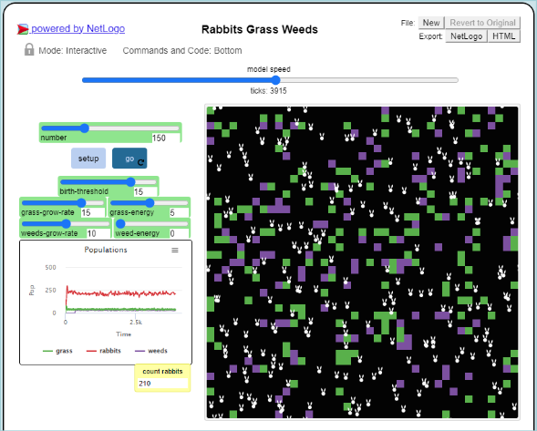

Home
Portfolio
About Me
this is evelyn's portfolio page!

This is my 1.1.9 Project, Build-A-Bear!
This game allows you to create a personalized bear you can pick different colors for each body part and even add accessories such as a necklace and fedora!

This is my game, Baby Dropping simulator!
The objective of the game is to make the stork drop the babies on the house so they are happy and have a home. If you fail to do so, the baby will cry :(
This is my first Scratch project, Kirby Dash!
The objective of the game is to dodge the apples that the tree is shooting at you by jumping and ducking. Once you reach a score of 20, your character will change to Metaknight!

This is my graph for PLTW 3.2.4!
This graph shows the total honey production over the years of different states in the US.

This is my simulation project for PLTW 4.1.4! The simulation I chose was "Rabbits, Grass, Weeds"
This model simulates an ecosystem of rabbits, grass, and weeds. The white turtles represent a rabbit, the purple turtles represent weeds, and the green turtles represent grass.

Use data files to create graphs.
Using netlogo do remix of illusions.
Interactive Fiction Rags to Riches.